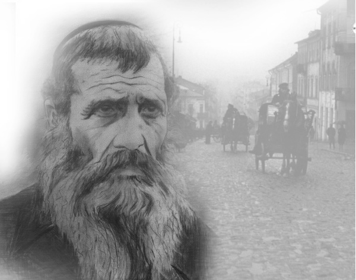

Reb Yisroel Neveler: In Good Times and Bad, Faithful to His Mission
Despite the suffering R’ Yisroel Neveler endured in his life – he lost eight out of his eleven children – he rejoiced in his lot and drew others into his simcha. * In Tashkent there were many chadarim, but his was the best. He guided his students in yiras Shamayim and implanted emuna in them, emuna in the ways of Chassidus. * He passed away on 9 Iyar. * Chapter two of his life’s story, which was recorded in the t’shura for the Melamed-Barber wedding.

As described in the previous chapter, R’ Yisroel was interrogated and taken from prison to prison. His family hired a lawyer in order to ascertain where he was being held, what he was being accused of, whether he would stand before a regular court or a troika (a three judge panel comprised of GPU agents, who operated outside of normal judicial procedure, without a prosecutor or defense lawyer, and regularly sentenced people to 10, 15, or 20 years without batting an eye; if the accused was lucky, he got only five years), and whether he could be defended. The family knew that most lawyers were afraid to challenge the authorities even in court. Nevertheless, hiring an attorney was still preferable to facing the court without professional representation.
“One day, a lawyer came and told us that he managed to find out that the file of Yisroel Davidowitz (son of Dovid) Levin, in other words our father’s file, had gone missing. When we asked him whether this meant that our father had disappeared (i.e. killed or died of torture) or was it just that the file was misplaced, he responded that he didn’t know.”
The family did not give up. After tireless efforts to locate people who had connections with those in charge of the jails in Moscow, and searching out every possible source of information, they finally found out that R’ Yisroel was in one of the prisons in the city and had not been sentenced yet.
26 HOURS OF T’FILLA IN JAIL
R’ Yisroel was in prison for thirteen months, from Elul 5697 until Tishrei 5699. After Yom Kippur 5699, a telegram came from one of his sons who lived in Moscow which said, “Father arrived healthy and whole.” The family was ecstatic. There were copious tears, but this time, they were tears of joy.
After a while, they found out from fellow inmates about his outstanding behavior during his arrest and interrogations. He knew all the t’fillos by heart and he would daven for hours. Prisoners regarded him as a holy man and treated him with reverence. He did not eat throughout Pesach. He saved up sugar cubes in advance and sucked on them throughout the holiday. On the last days he was so weak that he had no strength to get off his bed. The other inmates had pity on him and on Motzaei the last day of Pesach they quickly gave him hot water (from a special vessel that he agreed to drink from) so he could make Havdala and eat something to revive himself. “Yisroel,” they would say to him, “you need to live. You are a tzaddik. You will outlast them.”
On Yom Kippur, he stood for all 26 hours in a corner of the cell and prayed and cried (starting from before sunset on Erev Yom Kippur until after the stars emerged the following night). His family knew that he did this every year, but they were still astounded to hear that he maintained this practice in prison. They recalled that he once said humorously, “Who fasts on Yom Kippur? Most people just finish the prayers and go home to eat…” [The inference being that it just happens to take 26 hours to complete the day’s prayers – Ed.]
According to the inmates, nobody dared to approach him during those 26 hours. The other prisoners admired his conduct and lowered their voices so as not to disturb the Jewish “rabbin.”
“We all concluded that the rabbi would be released soon,” one of them told the family. “We said, someone who prays and cries and beseeches G-d so much – it is not possible that G-d will not have pity on him. He will surely get out of here quickly.” Indeed, the next day the jailer came and announced, “Levin, take your belongings and come with me,” and he was immediately released.
IF SO, IT’S BACK TO JAIL FOR ME!
There is an epilogue to this story, which perhaps more than any other event, embodies R’ Yisroel’s resoluteness when it came to the chinuch and guidance of his children. When R’ Yisroel was in jail, friends of the family went to his wife and said: Your husband is in jail and his life is in danger. They know that you don’t send your daughters to school. Since only your youngest daughter is obligated by law to attend school, perhaps you should send her. Then they might release your husband or at least minimize his sentence.
After pressuring her, she agreed to send her daughter to public school for the upcoming school year that began in September. She bought her daughter a briefcase, pens, books etc. and her daughter was very happy. She would finally be going to school like all the girls.
She began school and less than a month later were the Yomim Nora’im. Then her father came home the day after Yom Kippur. Of course, she did not go to school until Sukkos and then was off throughout the holiday. The day after Simchas Torah, she took her schoolbag and got ready to leave. R’ Yisroel noticed and asked her where she was going. She innocently replied, “To school!”
R’ Yisroel exclaimed, “Which school? What school?”
She said, “What do you mean? I have been going to school since the beginning of the school year.”
“What?! To school?”
“Yes. They told Mama that if she sends me to school there was a greater likelihood that your sentence would be reduced and maybe they would even free you. And see, I went to school and you were freed.”
“If so,” said R’ Yisroel grimly, “I’m going right back to jail.”
This was said with such forcefulness and sincerity that the little girl was shaken up. She saw how far her father was willing to go with mesirus nefesh for his children’s chinuch.
His release from prison was conditional on his following the law, but R’ Yisroel did not dream of abandoning his former pursuits. R’ Reuven Kaminetzky, his student in Yegoryevsk had this to say about those days following his arrest and release:
“After R’ Yisroel returned from jail, he once again organized the talmidim and continued secretly teaching us. The conditions were very harsh and we had to take great care, but we continued to learn until the outbreak of World War II.”
R’ Yisroel and his family traveled eastward when the war began, and after many travails arrived in Tashkent. The situation there was much better. The government was focused on annihilating the German army and wasn’t preoccupied with persecuting religious reactionaries. The city was full of Jewish refugees from Poland and the government allowed them to conduct themselves as they pleased.
R’ Meir Gurkow writes in his memoirs, “In Tashkent there were many chadarim, but the best one was that of R’ Yisroel Neveler. Aside from his being an expert and experienced teacher in terms of pedagogical methods and techniques, he would educate and guide his students in yiras Shamayim and implant emuna in their hearts, a pure and strong emuna in the ways of Chassidus. He prepared his talmidim so that they would be ready to enter yeshiva as T’mimim.”
EVEN WHEN THEY ARE TEARING PIECES OF FLESH FROM YOU, SAY THAT IT IS GOOD
We cannot fully appreciate the unique character of R’ Yisroel if we don’t examine his family situation. All those who knew him say that simcha was always apparent on his face; that he constantly smiled as though he was the happiest of men. However, not everyone knows that R’ Yisroel drank a cup of sorrows down to the bottom.
He had eleven children but only three survived. Three of his children who were born when he was in Rostov, twins and a daughter, died young; one twin shortly after birth (Russian medicine at the time was poor and sanitary conditions were abysmal) and the other twin lived only a few months before succumbing. Another daughter died at the age of one and a half.
When they were in Klimovich and made shoelaces, one of his daughters, Esther Hadassah, went out to bring shoelaces to a nearby town. This was something the members of the family took turns doing, but this time she went and did not return. All attempts at locating her failed and her whereabouts were never discovered.
While they were in Yegoryevsk before the war, the oldest daughter Rishe became sick with meningitis and died two weeks later, leaving behind a husband and three little children.
When the war began, Russia drafted all men from the ages of 17-45 to the front lines, and even older men to serve in the rear guard. Among the younger recruits was Dovid, his 27 year old son, who never returned from the war. He left behind two children and a pregnant wife.
Another daughter, Rivka, moved to the town of Pochep near her in-laws, the Posners, after she married. Her husband was drafted and she tried traveling to her parents with her daughter, but before she left the town the Nazis conquered the entire area. All the Jews, including Rivka and her baby and her husband’s entire family, were gathered in one place and were murdered by the Nazis.
In a letter that she sent to her parents before the massacre she wrote, “I so much want to join you, to be together again, but all around me is burning …”
***
In Tashkent there was a severe famine due to the war and it was then that the jewel of the family, Itta Henia, died. This daughter was an example to all in her behavior, middos, and yiras Shamayim. She could not bear the sight of her father suffering from hunger (food was distributed according to coupons and there weren’t enough) and she began bringing her portion of bread to her father. She would tell him that she had managed to buy bread on the black market. Due to lack of nutrition she became sick with dysentery. The doctors could not save her and she died on 26 Shevat 5702 at the young age of twenty.
Her death was the hardest of all the blows the family had been stricken with. Her mother walked about in a daze. The family’s spirits plummeted. But Purim fell out within the Shloshim. R’ Yisroel got up in the morning to daven and hear the Megilla. He returned a few hours later with a firm stride, opened the door with a smile and called out, “Ah gutten Purim!”
His wife barely had time to recover from his happy voice, when a group of people from the minyan followed him in. They looked pathetic with their patched up clothes, their pants tucked into their boots and tied with string, but R’ Yisroel’s simcha was contagious. Bottles of mashke were opened and remnants of food were served. You could not recognize R’ Yisroel, who less than a month ago had suffered the loss of his eighth child. The Chassidim sat and farbrenged and R’ Yisroel was the main speaker.
As to the following Purim, his son-in-law (and nephew) R’ Shmaryahu Feldman recounted:
“While farbrenging with the Chassidim, after saying l’chaim once, twice, three times and more, and was tipsy, he closed his eyes and began to cry. He leaned on his hand and after some time, as though being awoken from a dream, he wiped his eyes, said l’chaim once again, and cried out, ‘Even when they are tearing pieces of flesh from you, say that it’s good.’ He repeated this line many times with tears coursing down his face and beard and moistening the table. Silence reigned. Many could not withhold their own tears and there were those who said that he repeated this line eight times for the eight children he lost.
“Then he recovered and exclaimed, ‘It is Purim today. We need to rejoice. Yidden, say l’chaim!’”
There is no pen that can describe the greatness of mind and elevation of spirit of R’ Yisroel, who knew how to rise above all his sorrows and continue learning, teaching, observing and fulfilling – and rejoicing and making others rejoice.
FABULOUS STORYTELLER
In Tashkent, R’ Yisroel served openly as a melamed. His love for his talmidim was legendary, and they reciprocated that love, even if he punished them now and then.
Most of the talmidim who learned with him in Tashkent, love him till this day. When you speak to them today, they tell you that R’ Yisroel was “one of a kind.” You ask them to elaborate and they find it hard to do so. They might remember some detail or another but they will quickly add, “That’s not it. R’ Yisroel was more than that. This story and that explanation pale in the face of who he truly was. It’s better not to try and quantify it.”
R’ Lipa Klein was willing to relate one incident that he cannot forget:
“When we were ten year old children, we learned Chumash BaMidbar with R’ Yisroel Neveler in Tashkent. We got up to the section on korbanos in Parshas Pinchas, and to the Rashi on the words, ‘command the Jewish people.’ R’ Yisroel began reading the Rashi about the parable of a princess who died and then abruptly stopped. He cried and minutes passed before he could continue. We realized that the parable reminded him of his daughters who had died. He did not speak but we could sense the powerful emotions he was feeling.”
Many of his talmidim from those days recall the stories he would tell them on the afternoons of fast days when they did not learn. He would tell stories and they would sit with open mouths as they swallowed every word. “R’ Yisroel was a mesmerizing storyteller. Each story that he told us was related so vividly that it was as though we watched it unfold.”
When the first Chassidim who arrived in the US from Europe (after leaving Russia) had yechidus with the Rebbe Rayatz, he asked them, “Is Yisroel Neveler still telling stories?”
CONSTRUCTIVE CRITICISM
When he chastised someone sharply, they were never embarrassed. The proof is that all those who “got it” from him would tell it over to others afterward.
R’ Shaul Brook said, “I was once sitting and teaching Ein Yaakov in shul while R’ Yisroel stood in a corner talking to one of his friends. This disturbed me and I said: Either be quiet or go out. I didn’t realize that Yisroel Neveler was one of those talking.
“R’ Yisroel immediately stopped talking and with a smile on his face he came over to me and said, ‘I want to tell you a little story. A rav and his son once had an argument. In the stormy exchange the son vowed: I will never call you Tatty again. Days passed and on Shvii shel Pesach the son got Maftir. When he read the Haftora he reached the verse, v’oivai tata li oref, and did not know what to do. His father was in shul and how could he say ‘tata’ which was just like Tatty? He said ‘gata’ instead, and people corrected him; he said ‘lata,’ ‘shata,’ and each time, they corrected him. His father realized what was going on and he went over to his son and said: I am willing to leave the shul just so that you don’t read it wrong.’ And R’ Yisroel left.”
ACTIVE IN FREEDOM TOO
R’ Yisroel was able to leave Russia in 1946 for Poking, Germany. He was in a free country and was able to openly sit and learn Torah, but here too, as in Rostov, he did not suffice with Torah study. He opened his home to all in need and was very involved in the community. He did a lot in the area of shalom bayis, for example, spending hours listening to the aggrieved parties, putting in all his effort, authority and powers of persuasion, until he succeeded in bridging differences and creating shalom. Each time he was successful, his face shone with happiness.
His involvement with other people’s problems took up a lot of his time and energy. Lubavitchers and non-Lubavitchers alike would pour out their hearts to him and R’ Yisroel was gracious to all and tried to help everyone.
When they asked him about this, he would explain that he was fulfilling the mitzva of Ahavas Yisroel. For example, there was a man in Poking who opened a nightclub with singers etc. Everyone kept their distance from him, because in addition to the kind of work he did he was a coarse individual and none too bright. One day though, he came to R’ Yisroel who devoted quite a bit of time to him, listening to him and trying to help him.
When the man left, R’ Yisroel’s daughter asked him, “Why did you have anything to do with him? He doesn’t have even one good quality.”
“If so,” said R’ Yisroel, “that’s very good because then one can fulfill the mitzva of Ahavas Yisroel with him in the fullest sense.”
Although his life was full, as he was busy with community matters and taught nonstop, his suffering left a deep impact on his body and soul. While his family (aside from his wife) left in 1948 for France and from there to Eretz Yisroel, he remained in Poking because of his poor health. He hoped to get better and join them later.
However, he became increasingly weak and passed away on 9 Iyar 5708. The mashpia R’ Avrohom Drizin (Maiyor), who was with him till the end, said, “R’ Yisroel was very weak and on the day of his passing he asked me to put Rabbeinu Tam t’fillin on him too. Since I knew that any effort was too much for him, I pushed him off time and again until he said, ‘You fool, what do you think? That you’ll save me like this? Bring me the Rabbeinu Tam!’”
All were his friends, but he had a special friendship with R’ Avrohom Eliyahu Plotkin. When R’ Yisroel died, R’ Avrohom Eliyahu was in Paris and his family and friends wanted to hide the news from him, since he had had a number of heart attacks already.
One day he found out that R’ Yisroel was no longer alive. He burst into tears and heartrending cries. When he calmed down a bit he said, “In Lubavitch there were various types of T’mimim. There were lamdanim whose heads lay deep in Torah as they swam in the sea of Talmud and brought up pearls. There were maskilim who delved into Chassidus, into its wondrous descriptions of the inner workings of the soul and supernal s’firos. There were ovdim who put all their energy into avoda of the heart which is t’filla and they davened for hours.
“Yisroel Neveler was a tremendous lamdan, a remarkable maskil, and an oved Hashem with sincerity and warmth to the point of exhaustion of the soul. I never saw another one with such an elevated and complete combination of attributes.”
GUILTY CONSCIENCE
His daughter related:
I once went with my father to one of the villages to buy an animal and shecht it. This had been arranged ahead of time. My father shechted the animal and examined it and when it was found to be kosher we took the parts we wanted and left the rest for the goy. Suddenly, we heard people approaching. My father and I ran to hide, leaving the goy alone. A few minutes later, when realized that they were his family members, we came out of hiding, paid him, and took the meat and went home. We distributed the meat to those families who had ordered it.
The next day, my father’s conscience bothered him because, for those minutes that we hid, the goy was alone with the meat. This was basar she’nisalem min ha’ayin (meat that a gentile may have had access to while unsupervised by a Jew) and how could he have given Jews this meat? When Chassidim told him that it wasn’t a problem considering the short time it had been left alone, he wasn’t satisfied. He could not get over it and refused to shecht anymore.
He wrote a letter to the Rebbe Rayatz and asked for a tikkun t’shuva. The Rebbe responded that there wasn’t a shadow of a doubt of a problem, and his anguish was a tactic of the yetzer ha’ra to deter him from his avodas Hashem. Nevertheless, my father was bothered by this all his life. This was a man who was truly a yerei Shamayim.
Beis Moshiach (staff). "Reb Yisroel Neveler:
In Good Times and Bad, Faithful to His Mission." Beis Moshiach, no. 876 (April 17, 2013).